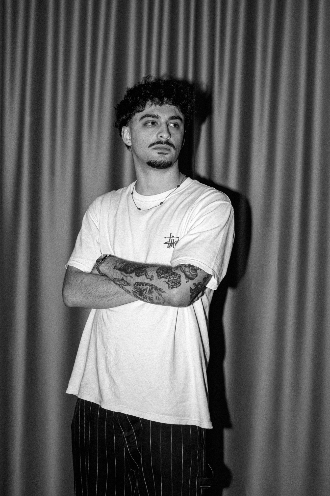
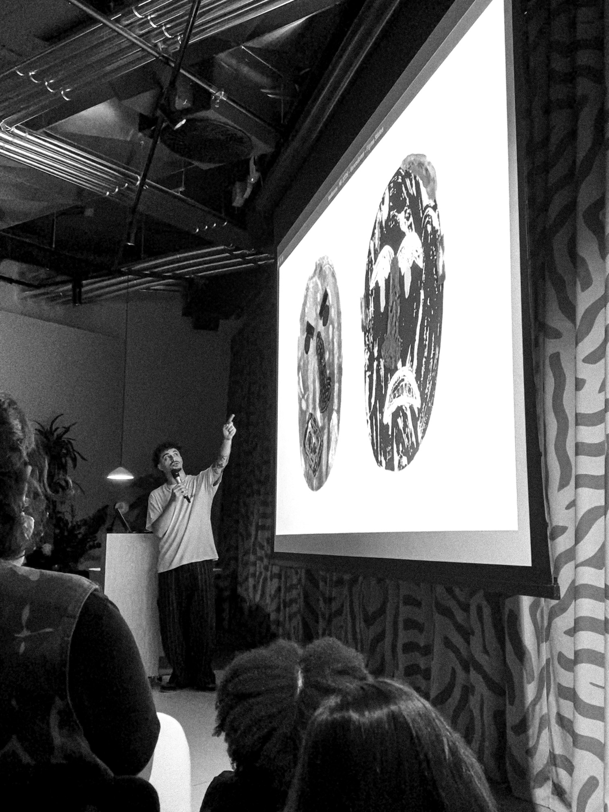

Diogo Pacheco Saraiva is a multidisciplinary graphic designer based in Porto, Portugal. His work spans branding, visual identity, editorial design, poster design, merch design, motion design, web design and illustration. He currently works as a freelancer, collaborating directly with brands and services from different fields.
Services
Poster Design
Branding
Visual Identity
Editorial Design
Motion Design
Merch Design
Web Design
Illustration
Social-Media Strategy and Design
Email
diogopachecosaraiva@gmail.com
Instagram
@d.p.saraiva
Talks
Descomunal - Nova Fornada, Porto, PT, 2025
Mad Shift - ESMAD, Vila do Conde, PT, 2026
Workshop
Mad Shift - ESMAD, Vila do Conde, PT, 2026
Academic Background
Bachelors Degree, ESAD Matosinhos, PT, 2019 - 2022
Short Course on Creative Coding, ESAD Matosinhos, PT, 2022
Masters Degree, ESAD Matosinhos, PT, 2022 - 2025

